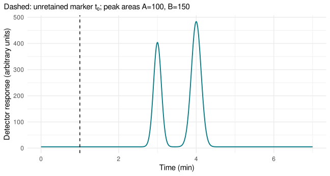
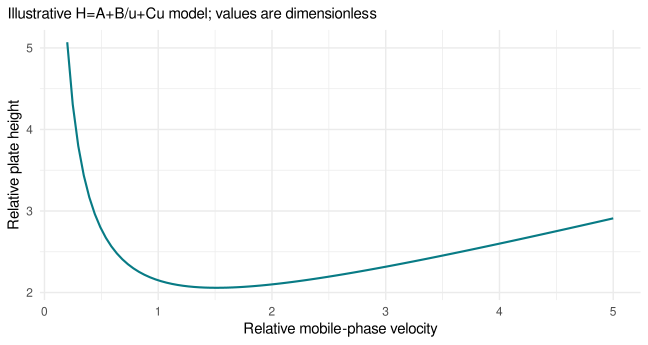

Connect phase exchange to retention, width and resolution
A detector sees what arrives together
A snapshot shows two separated bands moving through a column. The less retained band is further towards the outlet; time-resolved detection gives peaks.
How can we make a mixed response more selective?
A column snapshot is not a chromatogram
A snapshot shows two separated bands moving through a column. The less retained band is further towards the outlet; time-resolved detection gives peaks.
This picture is position inside a column at one time.
Repeated exchange controls average migration
Solutes repeatedly exchange between mobile and stationary phases. A greater stationary-phase residence fraction delays average migration.
Solute moves while it occupies the mobile phase.
Interactions create retention and selectivity
Solutes repeatedly exchange between mobile and stationary phases. A greater stationary-phase residence fraction delays average migration.
Conditions can change the relative residence of two compounds.
Read the chromatogram axes

A simulated chromatogram has unretained time one minute and resolved component peaks near three and four minutes.
Response versus elapsed run time.
Identify the transit time
A simulated chromatogram has unretained time one minute and resolved component peaks near three and four minutes.
The dashed marker is \(t_0=1.00\) min.
Subtract transit before calculating retention
A simulated chromatogram has unretained time one minute and resolved component peaks near three and four minutes.
\(k=(t_R-t_0)/t_0\).
Compare the two retention factors
A simulated chromatogram has unretained time one minute and resolved component peaks near three and four minutes.
Broader component peaks overlap more despite unchanged retention times and component areas.
Which can remain the same while a peak becomes lower?
Calibration still supplies the amount relation
A simulated chromatogram has unretained time one minute and resolved component peaks near three and four minutes.
A larger peak is not a universal count of molecules.
Resolution includes spacing and width
\(R_s=2(t_{R2}-t_{R1})/(w_1+w_2)\).
Calculate the resolved pair
A simulated chromatogram has unretained time one minute and resolved component peaks near three and four minutes.
2 × (4.0 − 3.0)/(0.4 + 0.5) = 2.222.
A familiar threshold needs conditions
A simulated chromatogram has unretained time one minute and resolved component peaks near three and four minutes.
Near 1.5 can be useful for similar Gaussian peaks; adequacy depends on the task.
Changed spacing reduces resolution
The same component areas appear resolved or overlapping when their retention-time spacing changes.
The overlap run has \(R_s=0.667\).
An integration boundary is not chemical selectivity
The same component areas appear resolved or overlapping when their retention-time spacing changes.
Does drawing a split recover independent evidence?
Changed width also reduces resolution
Broader component peaks overlap more despite unchanged retention times and component areas.
The broad run keeps retention times but has \(R_s=0.909\).
Separate efficiency from selectivity
A snapshot shows two separated bands moving through a column. The less retained band is further towards the outlet; time-resolved detection gives peaks.
Narrower bands and different relative retention solve different problems.
Estimate plate efficiency only with a stated model
For ideal Gaussian peaks, \(N=16(t_R/w_b)^2\).
Why can very slow flow broaden bands?

A dimensionless illustrative plate-height curve is high at both low and high mobile-phase velocity.
Diffusion acts over a longer time.
Why can very fast flow broaden bands?
A dimensionless illustrative plate-height curve is high at both low and high mobile-phase velocity.
Finite mass transfer can prevent efficient exchange.
Identity needs more than expected retention
The same component areas appear resolved or overlapping when their retention-time spacing changes.
Another component can arrive at the same time.
Transfer the definitions
Broader component peaks overlap more despite unchanged retention times and component areas.
t₀=0.80; tR=2.40 and 3.20; baseline widths=0.40 and 0.60 min.
Choose the next action from the failure
Solutes repeatedly exchange between mobile and stationary phases. A greater stationary-phase residence fraction delays average migration.
Is it spacing, width, identity evidence or calibration that is missing?